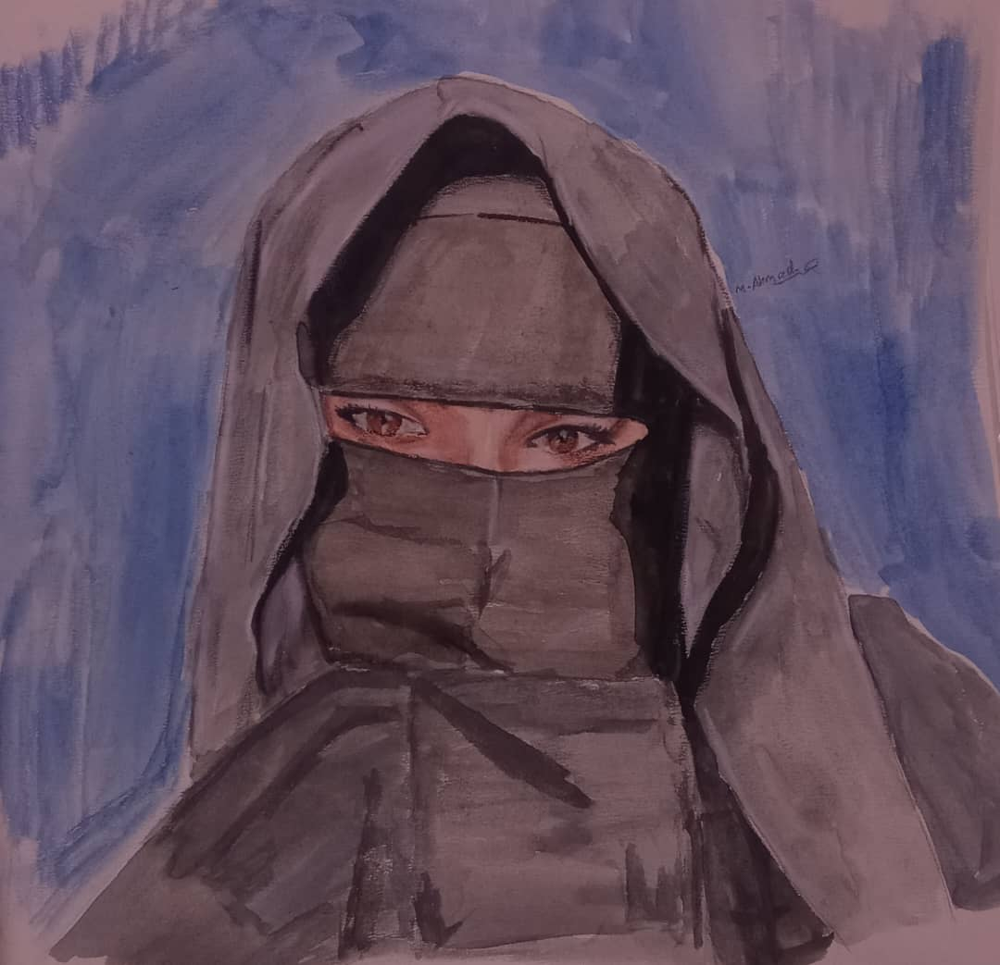

بورتريه وحيوانات
المستوى الفني A


اللقبتمن
فنان هاوٍ يرى الجمال في انعكاس الألوان.
الفن سلام داخلي...
تخصص الرسم المفضلرسم لايف
خامة الرسم المفضلةألوان مائية - أقلام تلوين خشبية
اسحب يمينًا ويسارًا لاستعراض التصنيفات
المستوى الفني A
المستوى الفني B
المستوى الفني C
المستوى الفني E
لم يحدد المستوى
مستويات التصنيفات المسجّلة
يعرض التصنيفات التي حُدد مستواها فقط
أعلى الجمال تغار منا
ماذا عليك إذا نظرنا
هي نظرة تنسي الوقار
وتسعد الروح المعنى

لا تعبر فقط عن تحول لوني بسيط بل قفزة في الرؤية الفنية للعالم